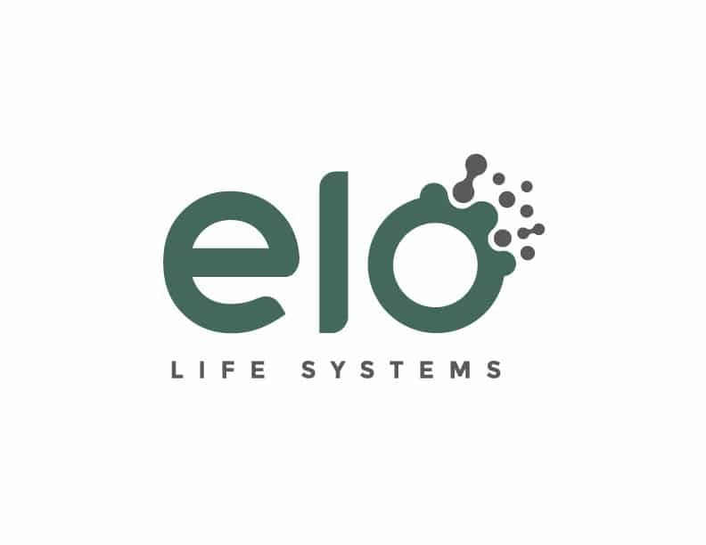
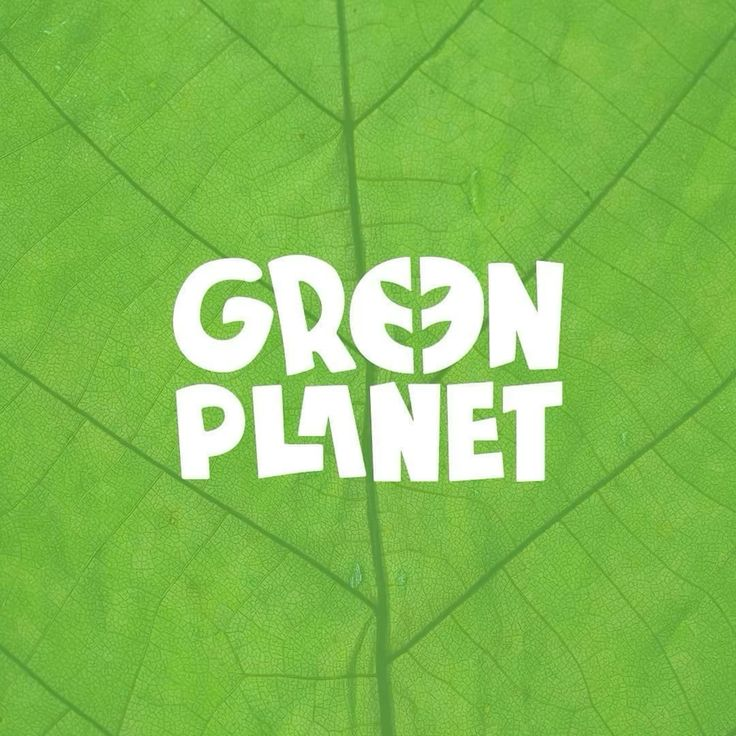
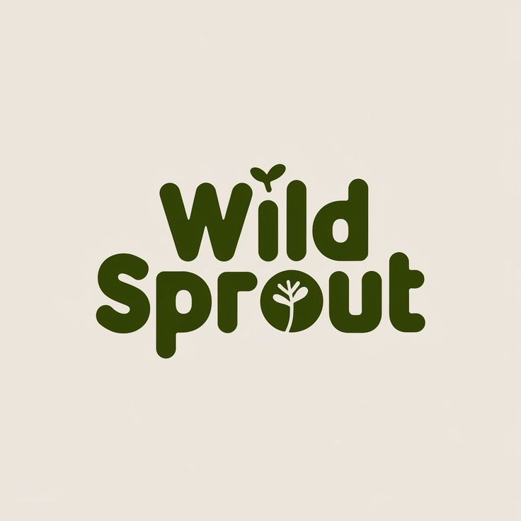
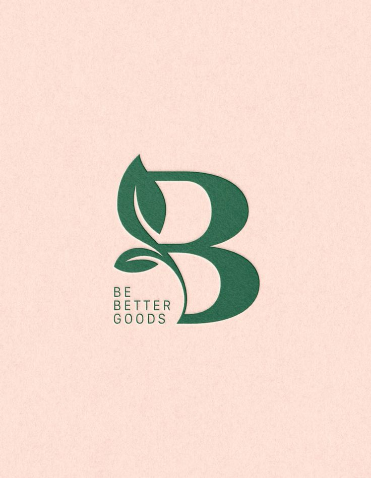
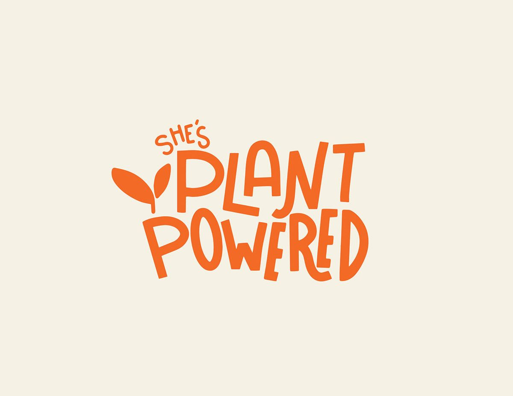
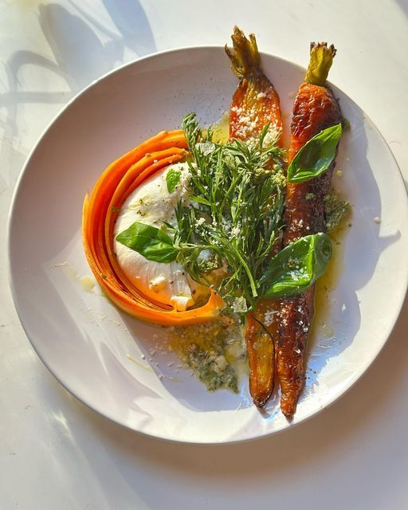

Eat with the Seasons.
Revive Your Community.
Communis bridges the gap between local producers and consumers, building a sustainable living community through real-time data and direct connection.
1M+
Active Eco-conscious Users
2,000+
Local Producers & Shops
1,250Tons
Target: 2,000T by 2026





Four ways to reconnect with your food.
A comprehensive toolkit designed to change consumption habits, support local economies, and reduce ecological footprints.
Interactive Map
Localize fresh produce and discover seasonal merchants right in your neighborhood with one click.
Alerts & Forecasts
Get real-time notifications for imminent arrivals. E.g., '200kg of carrots arriving tomorrow'.
Zero-Waste Recipes
Turn freshly bought, seasonal produce into gourmet anti-waste meals with chef-curated guides.
Challenges & Rewards
Complete missions for sustainable eating, earn community badges, and unlock merchant discounts.
Support local.
Earn your rewards.
We turn sustainable living into a rewarding habit. Complete this week's ecological missions to unlock exclusive discounts at partner merchants.
1. Shop Seasonal
Use the interactive map to purchase fresh produce from any local farmer or organic grocery store.
2. Zero-Waste Cooking
Follow our chef-curated guides to utilize your ingredients completely—from root to stem.
3. Share with Community
Post a photo of your zero-waste meal to inspire others and validate your challenge.
Local Hero Coupon
Valid at all Communis partner markets for fresh, seasonal produce.
Zero-Waste Joy.

Carrot Roast with Herb-Top Chimichurri

Sautéed Beet Greens & Golden Garlic Stems

Velvety Broccoli Stalk & Leek Skin Cream Soup

Seasoned Potato Skin & Zucchini Peel Crisps
Ready to boost local commerce?
Join the post-crisis movement. Turn your daily meals into an engine for community resilience and environmental sustainability.